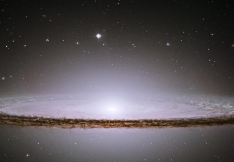

Sacred Texts Esoteric
Buy this Book at Amazon.com
|  | The Consciousness of the Atomby Alice A. Bailey[1922] |
The eminent esoteric author Alice Bailey, published dozens of books, but they are hard to find in electronic form on the web. This is because Lucis Publishing Company (in 1922 called 'Lucifer Publishing Company'), her exclusive publisher, has aggressively challenged web postings of her material using copyright law. However, this book, prepared from a genuine 1922 first edition, is firmly in the public domain in the United States by the terms of the Digital Millennium Copyright Act, because it was published prior to 1923.
This book was apparently delivered as a series of weekly lectures in 1921 and 1922, and published later in 1922. Bailey, even at this point in her career, shows a mature grasp of esoteric issues, and deftly brings in scientific concepts such as radioactivity and the fourth dimension. Unlike some other authors of this genre, she invokes leading-edge science when it moves the argument ahead, not to impress the reader with her erudition, or to baffle the audience with irrelevant facts.
She sees the universe as alive at all scales of existence. While the comparison of an atom to a solar system no longer holds true, her vision of how consciousness evolves even in the micro-scale and macro-scale, and how that is mirrored in the tripartate human being, is a lucid explanation of an occult world-view expressed by many other thinkers.
{kind=link}